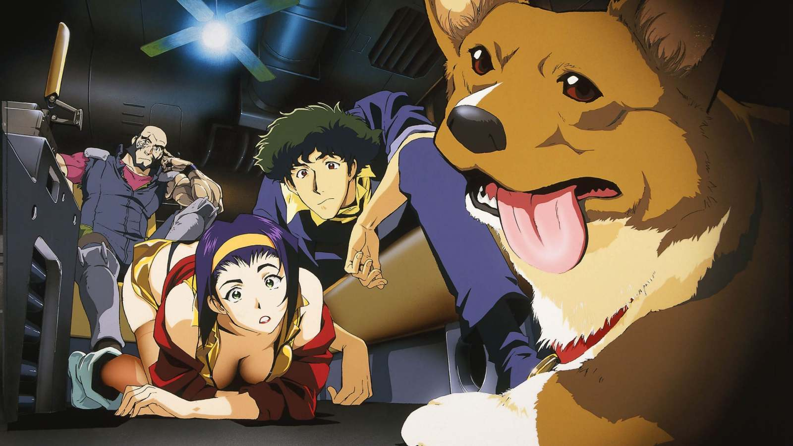

Welcome Space Cowboy!
Ambientada en el año 2071, "Cowboy Bebop" sigue las aventuras de un grupo de cazarrecompensas que viajan a través del sistema solar en la nave espacial Bebop. A pesar de que cada episodio tiene su propia historia, hay un arco narrativo más amplio que se desarrolla a lo largo de la serie, centrándose en el pasado de los personajes. La serie se caracteriza por mezclar una variedad de géneros, desde acción y ciencia ficción hasta drama y comedia. La música, compuesta por Yoko Kanno y interpretada por la banda The Seatbelts, juega un papel crucial en la serie y es altamente aclamada. "Cowboy Bebop" explora temas profundos como la soledad, la existencia, y el pasado, mientras que al mismo tiempo presenta episodios llenos de acción y aventura. A lo largo de la serie, los personajes enfrentan sus propios demonios y pasados, buscando significado y propósito en un mundo que a menudo parece indiferente. La serie culmina en un enfrentamiento entre Spike y Vicious, poniendo fin a un viejo rencor y dando cierre a las historias de los personajes principales.